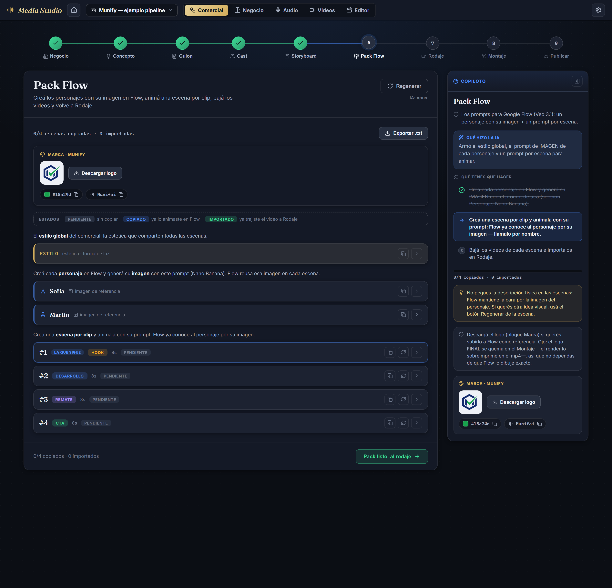
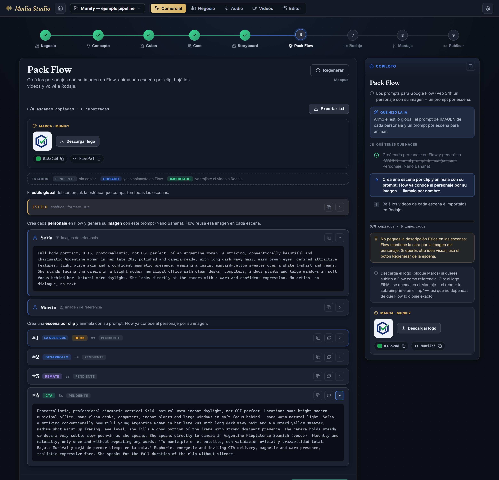
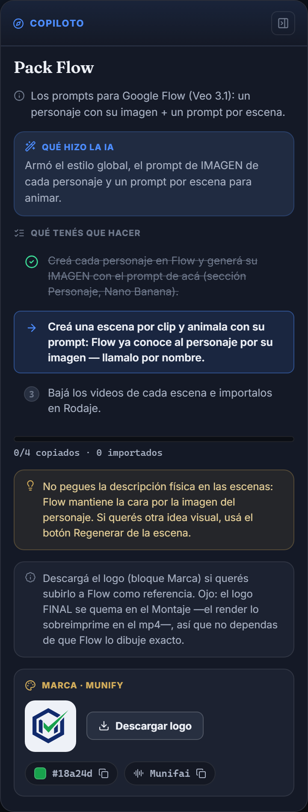

fisicoEn verbatim en cada prompt (nuestra "garantía") era justo lo que rompía Flow. El molde flowpack se reescribió a las 3 piezas del flujo nuevo.estilo + personajes[] (con promptImagen) + escenas[]. Antes: master + clips[].VEO_RULES: rioplatense/voseo, talking head 8s, plano medio, sin silencio) se REUSÓ tal cual. Personajes = imagen de referencia; Escenas = acción + diálogo referenciando al personaje por nombre + "Argentine". Se retiró la garantía verbatim (verificarConsistenciaFlowpack): en el flujo nuevo la consistencia la fija la imagen.| Pieza | Antes (flujo viejo) | Después (flujo nuevo) |
|---|---|---|
| Estilo | Embebido en el master, junto con personajes y locación. | estilo: bloque global aparte — SOLO estética/formato/luz, sin personajes ni acción. |
| Personaje | fisicoEn pegado VERBATIM en el master y repetido al inicio de CADA clip. | personajes:[{id,nombre,promptImagen}] — promptImagen = retrato full-body 9:16 para GENERAR la imagen de referencia (Nano Banana). |
| Escena | clips:[{escenaN,prompt,estado}] — cada prompt arrancaba copiando el master entero. | escenas:[{escenaN,rol,prompt,estado}] — el prompt refiere al personaje por NOMBRE + "Argentine" (corto), SIN el fisicoEn. |
| Consistencia | Garantía manual: fisicoEn verbatim exigido en cada clip o throw. | La fija la IMAGEN del personaje. La garantía se retiró (era lo que devolvía imágenes estáticas). |
| Regen por escena | {clip:{...}}, pasaba por la garantía. | {escena:{escenaN,prompt}}, sin garantía verbatim (varía la idea visual, mantiene al personaje por nombre). |
packFlow viejo (master+clips) queda incompatible. No se migra a mano: si packFlow no tiene escenas, PasoPack muestra el aviso "regenerá el pack para el flujo nuevo" y el botón produce el shape nuevo. Reels sin packFlow: intactos. packProgress es tolerante (?? []).flowpack (server) feat(ai) · c77dfbbserver/functions.mjs: el build arma las 3 piezas, el parse valida el shape nuevo, inyecta el rol de cada escena desde el storyboard (autoridad = el storyboard, no la IA) y el estado:'pendiente'. Se borró el helper verificarConsistenciaFlowpack completo (grep confirmó cero referencias). El molde qa se ajustó: packFlow?.master → packFlow?.estilo y el criterio de continuidad pasó de "fisicoEn verbatim" a "consistencia por imagen del personaje".VEO_RULES tal cual — el prompting de idioma/cadencia/talking head no se tocó ni se fue a buscar afuera.promptImagen del cast (fisicoEn+vestuario) → retrato de UNA persona argentina, foto fija, "No action, no dialogue".--st-*, filas colapsables), reorganizado a las 3 piezas: ESTILO (fila dorada) · PERSONAJES (cada uno: nombre + su promptImagen + Copiar, para pegar en la sección Personaje de Flow) · ESCENAS (prompt + Copiar + Regenerar + estado, resalta "la que sigue"). El progreso cuenta escenas copiadas/importadas. Cero rastro del master viejo.


/api/run-function (functionId flowpack) con el contexto de Munify (app municipal argentina · cast 2 · storyboard 4). HTTP 200 en ~77s. El resultado trae las 3 piezas; los checks confirman que el personaje es un RETRATO y la escena una ACCIÓN con diálogo español + "Argentine", sin el fisicoEn embebido.promptImagen de retrato full-body, "Argentine".{escena:{escenaN,prompt}} · otra idea visual, mismo personaje por nombre.Sofía → Full-body portrait, 9:16, photorealistic, not CGI-perfect, of an Argentine woman. A striking, conventionally beautiful and charismatic Argentine woman in her late 20s, polished and camera-ready, with long dark wavy hair, warm brown eyes, defined attractive features, light olive skin... She stands facing the camera in a bright modern municipal office... She looks directly at the camera with a warm and confident expression. No action, no dialogue, no text.
Photorealistic, professional cinematic vertical 9:16... Location: bright modern municipal office... Sofía, a striking conventionally beautiful young Argentine woman in her late 20s with long dark wavy hair and a mustard-yellow sweater, medium shot waist-up framing, eye-level... She speaks directly to camera in Argentine Rioplatense Spanish (voseo), fluently and naturally, only once and without repeating any words: '¿Cansada de hacer cinco colas para un solo trámite? Con Munifai reclamás un bache o pagás una tasa desde el celular, y el municipio te responde al toque.' Energetic and engaging hook delivery, warm confident and charming tone... She speaks for the full duration of the clip without silence.
fisicoEn completo del cast. La cara la fija la imagen del personaje. La marca fonética viaja correcta (Munifai), el acento se dispara con "Argentine", el diálogo va en español entre comillas dentro del prompt inglés — exactamente el patrón de VEO_RULES.| Gate | Resultado | Detalle |
|---|---|---|
| tsc --noEmit | 0 errores | Shape nuevo tipado en comercial.ts (PersonajeFlow / EscenaFlow / PackFlow). |
| eslint src/ | 0 errores | 9 warnings, todos PRE-existentes (CadenceWave, KitsStudio, ReelEditor…). PasoPack nuevo sin warnings. |
| vitest --pool=vmThreads | 240 / 240 | 17 files. Ajustados los tests del shape (pack) en comercial / copiloto / pasoEstado. |
| stylelint | 0 | CSS nuevo (pack-clip--persona, pack-migrate) con tokens --st-*. |
| vite build | verde | 1646 módulos, sin warnings nuevos (el aviso de chunk >500kB es pre-existente del bundle). |
| Funcional (IA real) | verde | pack: 2 personajes + 4 escenas · regen escena: OK. Shape y idioma confirmados. |
:5301 que estaba corriendo tenía el functions.mjs ANTERIOR cacheado (Node importa el módulo una sola vez; el runner no auto-reinicia). La prueba funcional se corrió en una instancia aparte con el código nuevo. Para usar el molde nuevo desde la app hay que reiniciar el backend (npm run studio / npm run server).munify-ejemplo (el proyecto "ejemplo pipeline") con el comercial completo (cast + storyboard + packFlow real) para el gate visual — queda como demo funcional del flujo nuevo. Cambio de DATOS, no de código; reversible regenerando/limpiando el reel.qa referenciaba packFlow?.master (que ya no existe) y exigía "fisicoEn verbatim en todos los prompts" como criterio de continuidad — habría dado señal falsa "(sin pack)" y penalizado el flujo nuevo. Se corrigió a estilo + consistencia por imagen, dentro del alcance del cambio de shape.